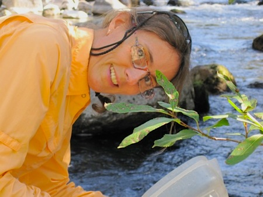

Collaborators

Jutta Schmidt-Gengenbach, MS, Staff Research Associate, deserves special mention. She has been a lab manager, taxonomist, field team member, and colleague for many years, and has been an integral part of all of our research activities.
Research assistants who have made important contributions
- Steve Case
- Rick Dodson
- Marie French
- Shelley Glenn Lee
- Caara Hunter
- Jason Love
- Lyra Pierotti
- Carole Schilz
- Laura Somervill Ocker
- Sophie Winitsky
Students advised, i.e., some of my best teachers
Austin Bowden-Kerby, PhD
Coral transplantation modeled after natural fragmentation processes:
Low-tech tools for coral reef restoration and management
Chelsea Clifford, undergraduate researcher
A comparison of invertebrate assemblages of natural and artificial
streams in cobble and sand substrates in Bishop, CA
Caren Eckrich, MS
Trampling effects on a seagrass assemblage: direct effects, response of
associated fauna, and the role of substrate characteristics
Michael Nemeth, MS
Effects of boat wakes on mangrove root epibiota
Kim Ogden, NSF REU researcher
Terrestrial invertebrates in Devils Postpile National Monument:
Preliminary study of community structure adjacent to trails and a
comparison of sampling methods
Adianez Santiago, NSF REU researcher
Species richness and abundance of invertebrates across a subalpine
forest-meadow ecotone
Burton Shank, MS
Effects of refuge size and shape on foraging patterns of an herbivorous
fish in an experimental seagrass/macroalgal system
Amy Uhrin, MS
Propeller scarring in a seagrass assemblage: effects on seagrass,
physical processes, and response of associated fauna


Click here for examples of seagrass fauna
{kind=link}


Click here for more images of our work on Caribbean stream fauna and dams
{kind=link}